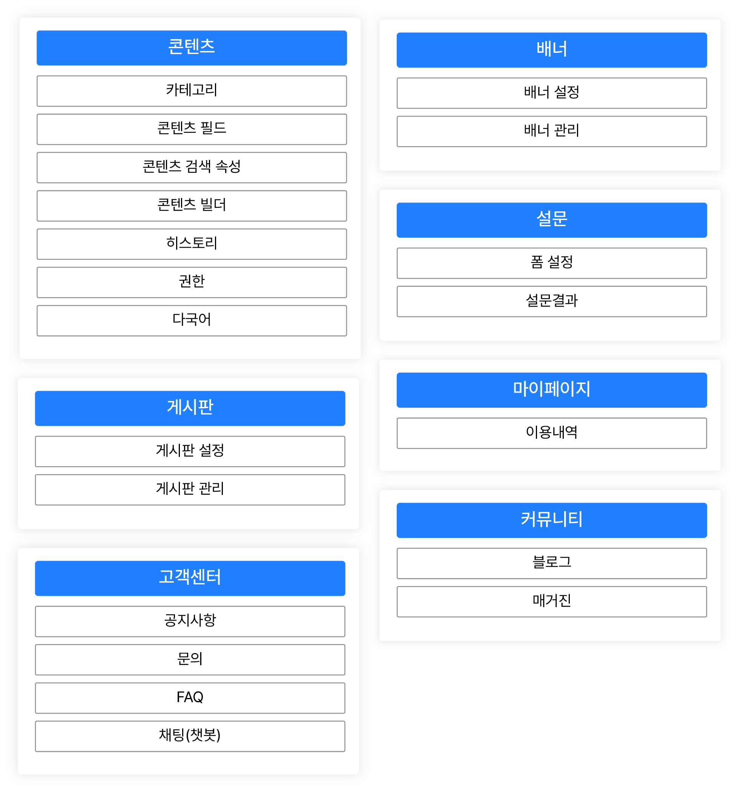
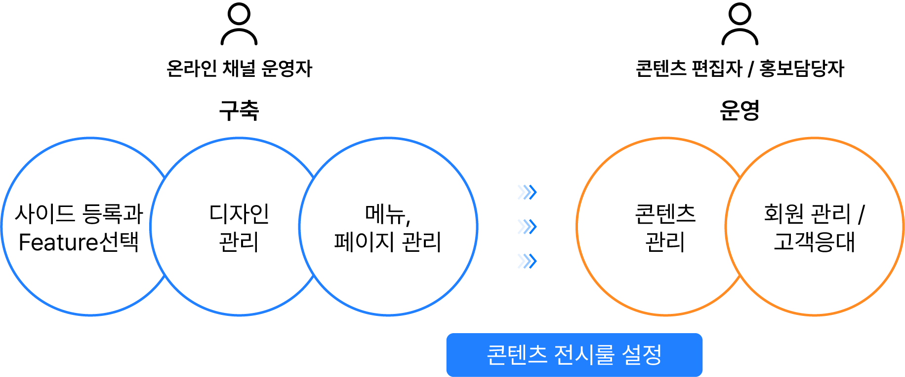

Contents Package + 커스트마이징

서비스특징
- 다양한 목적의 사이트, 스토어를 빠르고 손쉽게 구축/이전
- 기업만의 특성과 스타일에 맞는 콘텐츠를 제작 배포
- 기업의 비즈니스 니즈와 마켓 트렌드에 맞는 다양한 동적 Feature나 페이지 요소를 손쉽게 추가
- 제품 빌드 단계 혹은 사용 중 커스터마이즈가 필요한 경우 전문가 지원 서비스 이용 가능
제공기능
6가지 유형의 사이트 패키지
기존 상품/콘텐츠 데이터 가져오기
WYSIWYG 방식의 페이지 빌더와 캠페인 빌더 (옵션)
사용자 정의 테마와 템플릿, 컴포넌트 지원
새로운 Features, 템플릿, 컴포넌트 출시 알림
자사 파트너 네트워크를 이용한 커스터마이징 지원 서비스(유료)
Content Package
설정 기반 콘텐츠 저작 및 서비스 : Contents Builder에서 등록 자산을 활용하여 콘텐츠 제작이 가능하며 다국어, 히스토리, 접근 권한 설정과 유저 피드백 수집 적용이 가능합니다.

통합 콘텐츠 관리 플랫폼 제공
웹콘텐츠, 배너, 게시판, 설문 유형의 커스터마이징 정의 가능 / 활용도가 높은 고객센터, 커뮤니티 Preset 제공
